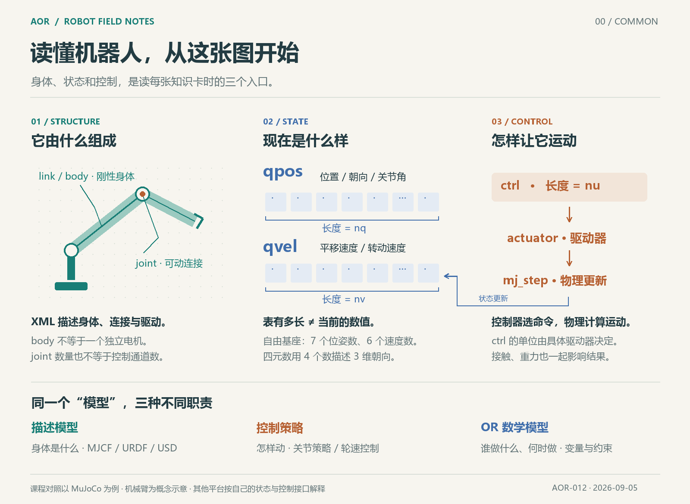

ILLUSTRATED NOTES / 00
Foundations / COMMON
Start with the body, its state and its control inputs.

A link is a body part, such as an upper arm or forearm. MuJoCo usually represents it as a body. A joint defines how connected parts can move relative to each other. An actuator receives a command and produces an effect. Some joints are passive or mechanically coupled, so a joint does not necessarily have its own motor.
Think of qpos and qvel as two state tables: one stores positions, orientations and joint angles; the other stores velocities. Their lengths are nq and nv. The control table is ctrl, with nu input channels. With a fixed model, movement normally changes the entries rather than the table lengths.
A robot description defines the body; a control policy determines how to move it; an OR mathematical model decides who does what and when. Loading an MJCF file does not establish a stable control skill or an optimized collaboration plan. COMMON here means shared introductory concepts.